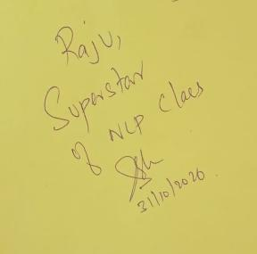
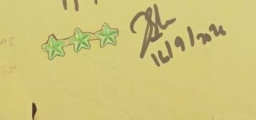
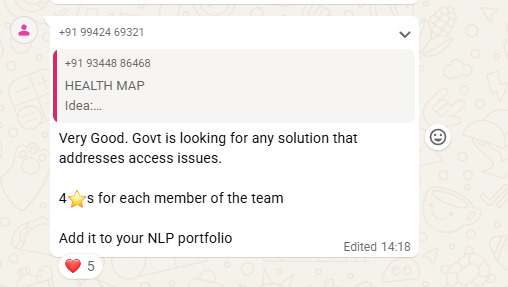
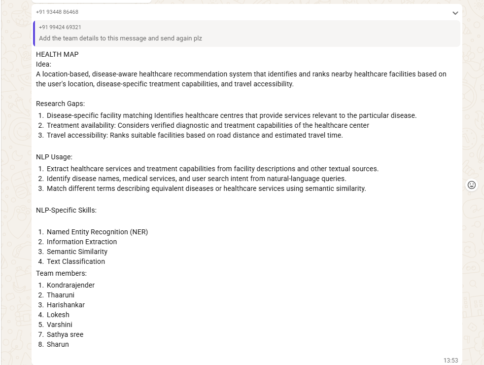

Q1
Class recall · 1★
What happens in syntactic analysis?
The text is analysed for its grammatical structure, which includes part-of-speech (POS) tagging of each word.
- Stars awarded
- 2 stars Signed 4 Sep 2026
Course portfolio
“My goal is to bridge the gap between human language and machine intelligence, one experiment at a time.”
NLP Portfolio
Natural Language Processing and Computational Linguistics
Explore
Assumptions I had to unlearn, and sentences I used to test what I learned
Recognition

I was recognized as a Superstar of the NLP Class by my faculty member, Prof. Sharmila Banu, for my active participation and engagement in Natural Language Processing (NLP) classroom activities.
This recognition motivates me to continue exploring NLP concepts, contributing to classroom discussions, and actively participating in academic activities.
Encourages active participation in classroom discussions.
Motivates me to learn more about Natural Language Processing.
Reflects my enthusiasm for academic learning and engagement.
Inspires me to continue improving my knowledge and communication skills.
Portfolio at a glance
Five in-class activities, one group project and one individual study.
| # | Activity | Type | Stars |
|---|---|---|---|
| 1 | What happens in syntactic analysis | Class recall | 1★ |
| 2 | Key points discussed in class | Class recall | 1★ |
| 3 | Language identification & writing systems: key terms | Class recall | 1★ |
| 4 | Stems, affixes & finite state transducers: key terms | Class recall | 1★ |
| 5 | Bigram / n-gram probability on the whiteboard | Problem solving | 1★ |
| 6 | Health Map: disease-aware healthcare recommender | Group project | 4★ |
| 7 | Translation evaluation of Telugu works | Individual study | 4★ |
| Total | 13★ |
Part 1 · In-class activities
Q1
Class recall · 1★
The text is analysed for its grammatical structure, which includes part-of-speech (POS) tagging of each word.
Q2
Class recall · 1★
Q3
Class recall · 1★

Q4
Class recall · 1★
Q5
Problem solving · 1★
Given three sentences, I solved the problem on the board by computing bigram probabilities and finding the probability of the next word for a given sentence.
Part 2 · Group project · 4★ each member
A location-based system that identifies and ranks nearby healthcare facilities by the user's location, disease-specific treatment capabilities and travel accessibility.
Kondra Rajender, Thaaruni, Harishankar, Lokesh, Varshini, Sathya Sree, Sharun.

The professor's feedback

Part 3 · Individual study · 4★
A film song and a classical poem, compared with similarity measures and a seven-criterion rubric, each out of 5, for 35 in total.
From the Telugu film Peddi. Lyricist: Anantha Sriram. Composer/Singer: A. R. Rahman. Released around March 2026.
| Translation A Meta AI | Translation B Saregama Telugu official subtitlesHigher score | |
|---|---|---|
| Translation | “Come on, come on, come as a path with no barriers, / Come on, come on, come as a wave with no limits.” | “Come rushing, come rushing, come like a stream that knows no stop, / Come rushing, come rushing, come like a tide that knows no bounds.” |
| Imagery | A path without barriers, a wave without limits | A stream that never stops, a tide without bounds; more idiomatic and dynamic |
By Yogi Vemana, in Telugu; exact date uncertain.
ఉప్పు కప్పురంబు నొక్క పోలికనుండు చూడ చూడ రుచుల జాడ వేరు పురుషులందు పుణ్య పురుషులు వేరయా విశ్వదాభిరామ వినుర వేమ
| Translation A LLM | Translation B Natural EnglishHigher score | |
|---|---|---|
| Translation | “Salt and camphor look alike, but when examined, their qualities are different. Among people, the truly virtuous are different from others. Listen, Vema, beloved of the universe!” | “Salt and camphor may look the same, yet closer inspection reveals their different qualities. So too, among people, the truly virtuous stand apart. Listen, Vema, beloved of the universe!” |
| Style | Follows the original wording more directly | Uses more natural English |
Both keep the message that true character can't be judged by appearance alone.
Evaluators rate 1 (very unnatural) to 5 (very natural).
Naturalness (%) = Total ratings ÷ (Number of evaluators × 5) × 100
Team: Kondra Rajender Yaswanth Chowdary Vickrant Salunke Project Files ↓
Awareness Gap Miner: Finding where welfare-scheme information fails citizens, using multilingual NLP on public text.
Government welfare schemes only help people who know about them and understand how they work. When someone doesn't know they're eligible, misses a deadline, or never learns why a payment stopped, the scheme fails them even though it exists. That confusion is already being written down every day in website comments, FAQs, news reports and call-centre queries, but it's scattered, unstructured and spread across English, Hindi and Hinglish. We wanted to turn that noise into a clear signal: which scheme is confusing people, where, and why, so departments and NGOs can fix the exact message that's failing.
Our system works as a five-stage pipeline, from raw public text to awareness-gap insights:
| Layer | Tools |
|---|---|
| Language | Python |
| Data collection | Custom safe crawler (robots.txt per RFC 9309, public-IP-only SSRF defence, 5 MB cap, per-host delay and backoff, TLS always on); RSS, sitemap and PDF parsing; data.gov.in Kisan Call Centre REST API |
| Text processing | Unicode NFKC normalisation; regex-based PII redaction; de-duplication |
| Language identification | Script-share heuristics + Hinglish word list + langdetect |
| Scheme detection | Regex alias dictionary for 15 central schemes |
| Embeddings | Multilingual MiniLM sentence-transformer (384-dimensional vectors) |
| Machine learning | scikit-learn TF-IDF + logistic regression, embedding-based logistic regression, soft-voting ensemble; cosine-similarity nearest-neighbour check |
| Clustering | HDBSCAN |
| Storage & deployment | Local datastore with a separate workspace for uploaded datasets; Docker + PostgreSQL deployment path (built, not yet tested) |
| Interface | Web dashboard with live monitor and search |
Results. Gap-detection macro-F1 0.65 (vs 0.34 majority baseline) and 0.74 on Hindi; intent 0.43; gap type 0.35. Adding Hindi and Hinglish cut “unclear” records from 2,703 to 482. Final split: 2,170 no gap, 482 unclear, 292 not applicable, 385 gap signals.
These figures describe the analysed text, not population-wide awareness.
Everything from our team project in one place: the full write-up, a recorded demo of the system, and the slides we presented in class.
Our full project write-up (6 pages), covering motivation, the gap we addressed, architecture, tech stack, datasets, the NLP pipeline, users, inputs and outputs, and references.
Awareness_Gap_Miner_Project_Writeup.pdf
The 9-slide deck we used to present the project in class.
Awareness_Gap_Miner_Presentation.pptx
Moments & Future Goals
Some of the most useful things I took from this course weren't definitions. They were moments where something I assumed turned out to be wrong, or where a simple sentence showed me how hard language really is for a machine. These are my own notes from those moments.
In one class, our professor asked us a simple question: what is language? Many of us answered differently: identity, art, communication, culture. Each answer was right in its own way, but the one I keep coming back to is this:
“Language is a universe without boundaries.”
With a limited collection of words and grammatical rules, humans can create endlessly new sentences, express infinite ideas, and communicate thoughts that have never been spoken before. This endless ability to generate meaning is what makes language infinite, and it's exactly what makes NLP such a fascinating challenge for machines.
I loved learning about metaphors in class, where ordinary words became powerful expressions of imagination. Discovering how we describe a person as a “walking dictionary” or time as a “thief” helped me understand that language is more than just words. It is a creative way of expressing thoughts, emotions and ideas beyond their literal meanings.
In class, everyone shared a metaphor of their own. Mine was “Her mind was a galaxy of thoughts.”
Stemming
I assumed: Cutting a word down to its stem would always leave a real word.
What I found: When we worked on stems and affixes in class, I learned that a stemmer like Porter turns “studies” into “studi”. That's when the difference clicked for me: a stemmer just strips endings by rule, while lemmatization looks up the actual dictionary form, “study”.
Stop words
I assumed: Removing common words like “the” and “not” always cleans up text.
What I found: It works for search, but in sentiment tasks it can wreck the meaning. Remove “not” from “not good” and you're left with “good”. I now check what a task needs before throwing words away.
N-grams
I assumed: A bigger n would always give a better language model, since it sees more context.
What I found: Doing bigram counts on the whiteboard showed me the catch. The longer the sequence, the fewer times it appears in the data, so most counts become zero. That's why smoothing exists.
Language identification
I assumed: Telling which language a sentence is in should be easy.
What I found: It's easy for a clean paragraph, not for the way many of us actually text. A line like “Movie chala bagundi, but climax konchem slow” mixes Telugu in Roman script with English, and most tools trip over it. We hit the same problem with Hindi and Hinglish in our project.
Translation
I assumed: A good translation is mostly about getting each word right.
What I found: My Telugu translation study changed this. The word-for-word versions were accurate but felt flat; the ones that kept rhythm, idiom and cultural meaning scored higher on naturalness.
More data
I assumed: More training data always means a better model.
What I found: Our project taught me otherwise. With only 127 hand-labelled examples, what mattered most was how relevant and clean the data was, and adding Hindi and Hinglish examples cut our “unclear” records from 2,703 to 482.
Whenever a topic came up in class, I tried to find a short sentence that would break a simple NLP system. Click a sentence to see my notes on it.
Roadmap
01
Master Large Language Models (LLMs)
Develop a deeper understanding of LLMs like GPT and BERT, exploring how they process language and generate meaningful responses.
02
Explore Multilingual NLP
Build NLP applications that understand and process multiple languages, especially Telugu and other Indian languages.
03
Build Intelligent Chatbots
Create conversational AI systems that understand user intent, maintain context, and provide helpful responses.
04
Understand Human Emotions Through Text
Develop sentiment analysis and emotion detection models that identify feelings, opinions, and hidden meanings in language.
05
Contribute to NLP Research
Explore new NLP challenges, experiment with advanced techniques, and contribute to research that makes language technology more accurate and accessible.
“To transform the infinite possibilities of human language into the limitless intelligence of tomorrow.”